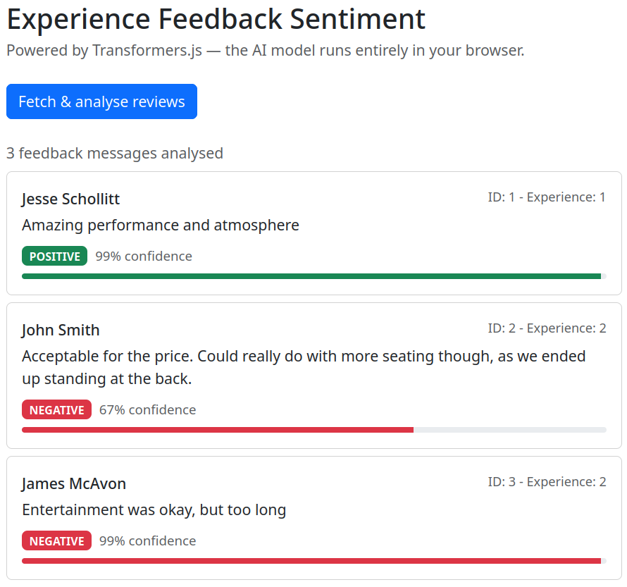

Drag & Drop API
Drag & Drop is a versatile set of functionality for websites. This demo shows how an HTML element can be transferred between containers using drag and drop events.
Drag & Drop File Upload
Drag & Drop for uploading image files to the website. Drag and drop
Web Storage API
Web Storage API provides multiple storage types to persist data. Data entered in the form can be saved and loaded from Session and Local storage.
Geolocation API
Geolocation API allows us to use the user's system location data to deliver rich web features.
Microphone Recording
Making use of the Audio input API to record and save voice memos.
Transformers JS
Transformers.js is a JS library that brings ONNX Machine Learning models to the frontend. We are using Transformers to run a sentiment analysis model on user feedback. This involves a JS worker, a React component, and our backend API.

Worker
import { pipeline, env } from '@huggingface/transformers';
// Don't look for models on the local dev server
env.allowLocalModels = false;
// Don't serve stale responses from the browser's Cache API.
// (A previous failed load may have cached an HTML error page,
// this prevents that bad cache entry from being used.)
env.useBrowserCache = false;
// The Singleton pattern ensures the model is only loaded once,
// even if multiple messages arrive while it is still loading.
class SentimentPipeline {
static task = 'sentiment-analysis';
static model = 'Xenova/distilbert-base-uncased-finetuned-sst-2-english';
static instance = null;
static async getInstance(progressCallback = null) {
if (this.instance === null) {
this.instance = pipeline(this.task, this.model, { progressCallback });
}
return this.instance;
}
}
// Receive messages from Component jsx
self.addEventListener('message', async (event) => {
console.log('Worker received message:', event.data);
// Load the model, downloads on first call, reuses the cache after that
const classifier = await SentimentPipeline.getInstance((x) => {
console.log(`Loading progress: ${x}%`);
// Send loading progress back to the jsx
self.postMessage({ status: 'progress', progress: x });
});
console.log('Model loaded:', classifier);
// Tell component the model is ready
self.postMessage({ status: 'ready' });
console.log('Worker is ready to analyze text.');
// If we were only asked to load the model (no text), stop here
if (!event.data.review) return;
console.log('Analyzing:', event.data.review.message);
// Run sentiment analysis and send the result back
const output = await classifier(event.data.review.message);
console.log('Analysis complete:', output);
self.postMessage({ status: 'complete', output, review: event.data.review });
console.log('Worker sent analysis result back to main thread.');
});
Sentiment Analyser Component
import { useState, useEffect, useRef } from 'react';
import 'bootstrap/dist/css/bootstrap.min.css';
import SentimentWorker from '../services/worker.js?worker';
import FeedbackCard from './FeedbackCard';
const API_URL = '/api/feedback';
export default function EventSentimentAnalyzer() {
const worker = useRef(null); // holds the Web Worker
const pending = useRef(0); // tracks how many results we're still waiting for
const [status, setStatus] = useState('idle'); // 'idle' | 'loading' | 'ready'
const [progress, setProgress] = useState(0);
const [isAnalyzing, setIsAnalyzing] = useState(false);
const [results, setResults] = useState([]);
// Create the worker once when the component first mounts
useEffect(() => {
worker.current = new SentimentWorker();
worker.current.addEventListener('message', (e) => {
if (e.data.status === 'progress') {
setStatus('loading');
setProgress(Math.round(e.data.progress.progress || 0));
}
if (e.data.status === 'ready') {
setStatus('ready');
}
if (e.data.status === 'complete') {
const { label, score } = e.data.output[0];
setResults(prev => [...prev, { ...e.data.review, label, score }]);
pending.current -= 1;
if (pending.current === 0) setIsAnalyzing(false);
}
});
return () => worker.current.terminate();
}, []);
function loadModel() {
worker.current.postMessage({ review: '' });
}
async function fetchAndAnalyze() {
setIsAnalyzing(true);
setResults([]);
const response = await fetch(API_URL);
let feedbacks = await response.json();
console.log(feedbacks);
pending.current = feedbacks.length;
feedbacks.forEach(feedback => worker.current.postMessage({ review: feedback }));
}
return (
<div className="container py-4" style={{ maxWidth: '680px' }}>
<h2 className="mb-1">Experience Feedback Sentiment</h2>
<p className="text-muted mb-4">
Powered by Transformers.js — the AI model runs entirely in your browser.
</p>
{status === 'idle' && (
<div className="text-center border rounded p-4">
<p className="mb-3">
The AI model (~67 MB) downloads once and is cached for future visits.
</p>
<button className="btn btn-primary" onClick={loadModel}>
Load sentiment model
</button>
</div>
)}
{status === 'loading' && (
<div className="border rounded p-4">
<p className="mb-2">Downloading model — {progress}%</p>
<div className="progress mb-2">
<div className="progress-bar" style={{ width: `${progress}%` }} />
</div>
<small className="text-muted">
This only happens once — the model is cached after the first download.
</small>
</div>
)}
{status === 'ready' && (
<>
<button
className="btn btn-primary mb-4"
onClick={fetchAndAnalyze}
disabled={isAnalyzing}
>
{isAnalyzing ? 'Analysing…' : 'Fetch & analyse reviews'}
</button>
{results.length > 0 && (
<>
<p className="text-muted mb-2">
{results.length} feedback messages analysed
</p>
{results.map((feedback, index) => (
<FeedbackCard key={index} feedback={feedback} />
))}
</>
)}
</>
)}
</div>
);
}
Feedback Card Component
import 'bootstrap/dist/css/bootstrap.min.css';
/**
* Helper function that converts sentiment to a bootstrap colour value
* @param {String} label
* @returns
*/
function badgeColor(label) {
if (label === 'POSITIVE') return 'success';
if (label === 'NEGATIVE') return 'danger';
return 'secondary';
}
function FeedbackCard({ feedback }) {
// Get display values from the sentiment analysis data
const color = badgeColor(feedback.label);
const confidence = Math.floor(feedback.score * 100);
return (
<div className="card mb-2">
<div className="card-body">
<div className="d-flex justify-content-between mb-1">
<span className="fw-medium">{feedback.name}</span>
<span className="text-muted" style={{ fontSize: '0.85rem' }}>
ID: {feedback.id} - Experience: {feedback.experienceId}
</span>
</div>
<p className="card-text mb-2">{feedback.message}</p>
<span className={`badge bg-${color} me-2`}>{feedback.label}</span>
<small className="text-muted">{confidence}% confidence</small>
<div className="progress mt-2" style={{ height: '6px' }}>
<div className={`progress-bar bg-${color}`} style={{ width: `${confidence}%` }} />
</div>
</div>
</div>
);
}
export default FeedbackCard;